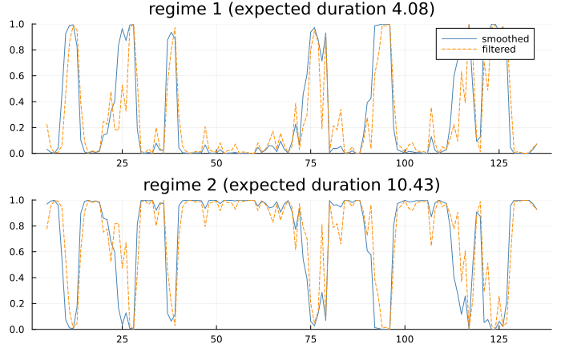
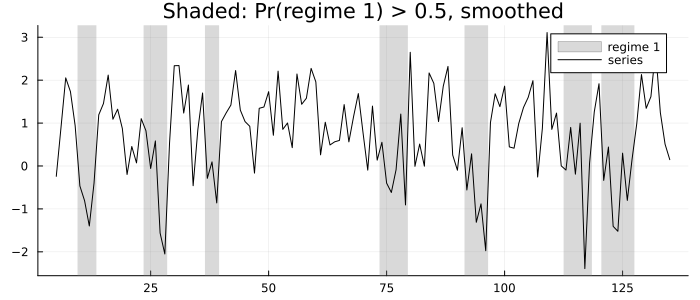
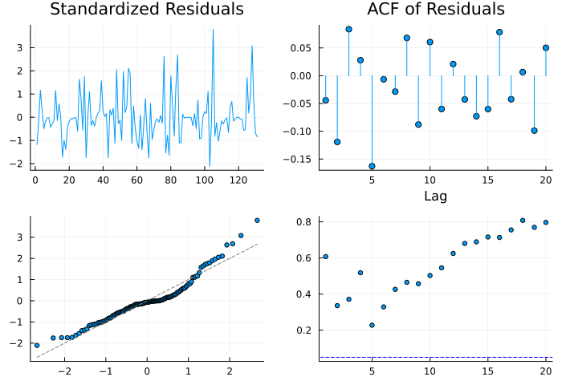
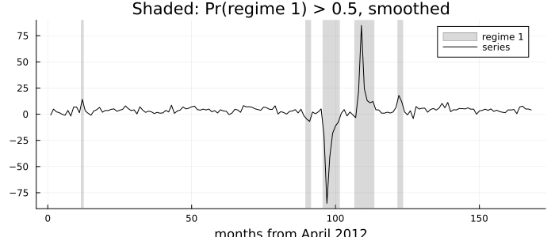

Regime Switching
A Markov-switching model lets a series' parameters — its mean, its variance, its autoregressive coefficients — jump between a small number of regimes that are never observed directly. The regime follows a Markov chain: which regime the series is in this period depends only on which it was in last period, through a matrix of transition probabilities that is estimated with everything else. What comes back is, for every period, the probability that the series was in each regime.
P[i, j] = Pr(S_t = i | S_{t−1} = j): columns sum to one. This is Hamilton's convention (1994, printed p. 678, PDF 693) and statsmodels'. Shumway & Stoffer (2017, Property 6.7) write the transpose, with rows summing to one. A transposed P gives plausible-looking nonsense, so check which one a formula assumes before using it.
Hamilton's model of the business cycle
Hamilton (1989) fitted an AR(4) to US real GNP growth whose mean switches between two regimes, with the autoregression taken around the regime's mean:
\[y_t - \mu_{S_t} = \sum_{j=1}^{4} \phi_j \,(y_{t-j} - \mu_{S_{t-j}}) + \varepsilon_t, \qquad \varepsilon_t \sim N(0, \sigma^2)\]
That is fit_ms_autoregression. Because the lags are taken around their own regimes' means, the likelihood depends on the last five regimes, and the filter runs over 2⁵ = 32 combinations — the expansion Hamilton describes (1994, printed p. 698, PDF 713).
using TSAnalytics, Plots, DelimitedFiles
using StatsAPI: coef, coefnames
gnp = Float64.(readdlm(TSAnalytics.HAMILTON_GNP, ',', skipstart = 1)[:, 2])
m = canonicalise(fit_ms_autoregression(gnp, 4))Markov-switching autoregression, order 4 (mean-adjusted), 2 regimes, nobs = 131
p[0->0] 0.75467096
p[1->0] 0.095915326
const[0] -0.3588127
const[1] 1.1635166
sigma2 0.59136839
ar.L1 0.013487098
ar.L2 -0.057521162
ar.L3 -0.24698328
ar.L4 -0.21292139
expected durations: [4.0762, 10.4259]
log-likelihood = -181.2634 AIC = 380.5268 BIC = 406.4036
optimiser converged; 2 distinct optima found across the starts (-181.2634, -183.6692)canonicalise orders the regimes by their mean, so regime 1 — labelled 0 in the parameter names, as statsmodels does — is the low one. The estimates against Hamilton's own Table 22.1 (1994, printed p. 698, PDF 713), which prints them to two decimals:
hamilton = Dict("const[0]" => -0.36, "const[1]" => 1.16, "sigma2" => 0.59,
"ar.L1" => 0.01, "ar.L2" => -0.06, "ar.L3" => -0.25, "ar.L4" => -0.21)
for (nm, b) in zip(coefnames(m), coef(m))
haskey(hamilton, nm) && println(rpad(nm, 9), lpad(round(b, digits = 4), 8), " Hamilton: ", hamilton[nm])
end
println("P[2,2] (stay in expansion) = ", round(m.P[2, 2], digits = 4), " Hamilton p₁₁ = 0.90")
println("P[1,1] (stay in recession) = ", round(m.P[1, 1], digits = 4), " Hamilton p₂₂ = 0.75")const[0] -0.3588 Hamilton: -0.36
const[1] 1.1635 Hamilton: 1.16
sigma2 0.5914 Hamilton: 0.59
ar.L1 0.0135 Hamilton: 0.01
ar.L2 -0.0575 Hamilton: -0.06
ar.L3 -0.247 Hamilton: -0.25
ar.L4 -0.2129 Hamilton: -0.21
P[2,2] (stay in expansion) = 0.9041 Hamilton p₁₁ = 0.90
P[1,1] (stay in recession) = 0.7547 Hamilton p₂₂ = 0.75Every estimate agrees to the two decimals printed. Hamilton numbers the regimes the other way round — his state 1 is expansion — so his p₁₁ is our P[2,2]. He prints no log-likelihood; statsmodels' is −181.26339, and this package matches it to 8.5e-14.
The last line of the model's display matters: the restarts found two optima. The likelihood of a switching model is multimodal, and the second one, at −183.67, is a degenerate solution with almost no persistence. fit_ms_autoregression runs several starts on threads and reports how many distinct optima they reached, so a fit that landed on the wrong one does not pass silently.
Regime probabilities
The filter gives Pr(S_t | data up to t); the smoother revises it with the whole sample. regime_probabilities returns either, and regime_plot draws them:
plot(regime_plot(m); size = (700, 440))
Where the dashed filtered line and the solid smoothed one disagree is where hindsight helps: a quarter of weak growth looks like the start of a recession in real time and is revised once the following quarters show recovery. The standard figure shades the periods the smoother assigns to the low regime:
plot(regime_plot(m); mode = :shaded, regime = 1, size = (700, 300))
How long a regime lasts once entered is 1 / (1 − P[i,i]):
println("expected durations (quarters): ", round.(expected_durations(m), digits = 2))expected durations (quarters): [4.08, 10.43]about four quarters of recession and ten of expansion. Those two numbers go in a table, not a chart.
Regressions, switching variances, covariates
fit_ms_regression is the order-0 case and allows regressors: y_t = c_{S_t} + x_t′β + ε_t, with switching_exog, switching_variance and (for the autoregression) switching_ar choosing what switches. A specification in which nothing switches is refused — its transition probabilities are not identified, and statsmodels silently returns its starting values for them. exog_tvtp makes the transition probabilities depend on covariates (Diebold, Lee & Weinbach 1994).
Residual diagnostics can be read per regime: diagnostic_plot(m; regime = r) weights each period's residual by the probability that it was in regime r, so the periods the model puts elsewhere fade out.
plot(diagnostic_plot(m; regime = 2); size = (700, 480))
India: a variance regime
Year-on-year growth of the Index of Industrial Production, April 2012 to March 2026, with a mean and a variance that both switch:
using Dates
iip = dataset("iip_india")
yi = 100 .* (log.(iip.value[13:end]) .- log.(iip.value[1:(end - 12)]))
di = iip.date[13:end]
mi = canonicalise(fit_ms_regression(yi; switching_variance = true))Markov-switching regression, 2 regimes, nobs = 168
p[0->0] 0.72078363
p[1->0] 0.034890712
const[0] 0.72840525
const[1] 3.6299813
sigma2[0] 1006.2929
sigma2[1] 6.4392963
expected durations: [3.5815, 28.6609]
log-likelihood = -469.1239 AIC = 950.2478 BIC = 968.9916
optimiser converged; 1 distinct optimum found across the startsturbulent = di[regime_probabilities(mi)[:, 1] .> 0.5]
println(length(turbulent), " months in the turbulent regime: ", Dates.format.(turbulent, "yyyy-mm"))18 months in the turbulent regime: ["2013-03", "2019-09", "2019-10", "2020-03", "2020-04", "2020-05", "2020-06", "2020-07", "2020-08", "2021-02", "2021-03", "2021-04", "2021-05", "2021-06", "2021-07", "2021-08", "2022-05", "2022-06"]plot(regime_plot(mi); mode = :shaded, regime = 1, size = (700, 300),
xlabel = "months from April 2012")
The model finds what a reader would: a calm regime of steady growth and a turbulent one with a variance about 150 times larger, occupied by the pandemic months of 2020 — and again twelve months later, in 2021, when year-on-year growth compares the recovery with the collapse. A switching model fitted to year-on-year rates sees a shock twice; that is a property of the transformation, and worth knowing before reading a second "crisis" into the second episode. The handful of isolated months outside those spells — March 2013, autumn 2019, mid-2022 — are single large surprises that the turbulent regime's wide variance absorbs more cheaply than the calm one's.
See also
- API: Regime Switching
- Threshold and Smooth-Transition Models — regimes set by an observed variable instead of a hidden chain
- Coming from R or Python —
MSwMandstatsmodels, and where they go wrong